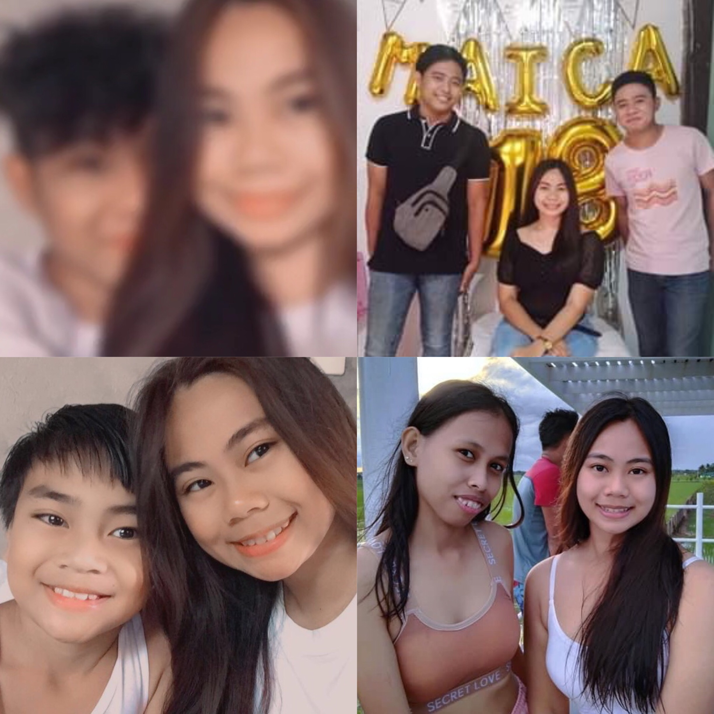

This is my Love Ones<3
Being mentally unstable isn't easy to prove that you love them, but they never failed me as a friend they loved me as who i am and they never judge me for what i am to them. "Pamela, Mhilca, Joshua and Alexis" is my real friends, they never left me at my worst. "Prince" is my only brother he's my bestfriend too, i love him so much, i'm so lucky to have a brother like him.
Home